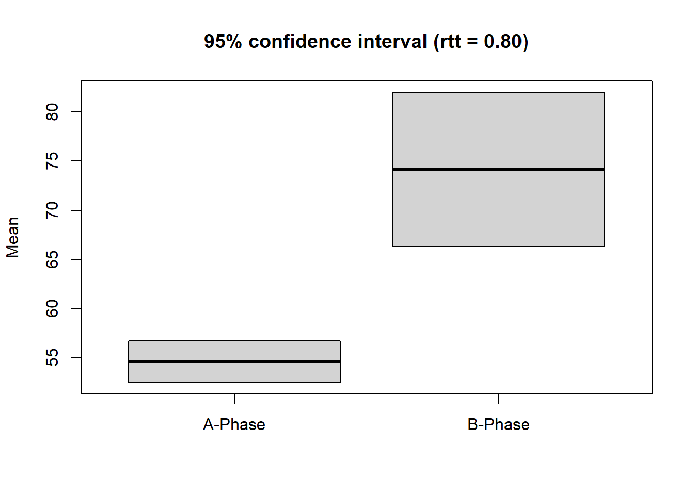

Chapter 7 Overlapping indices
| overlap(data, dvar, pvar, mvar, decreasing = FALSE, phases = c(1, 2)) |
overlap provides a table with some of the most important overlap indices for each case of an scdf. For calculating overlap indicators is is important to know if a decrease or an increase of values is expected between phases. By default overlap assumes an increase in values. If the argument decreasing = TRUE is set, calculation will be based on the assumption of decreasing values.
overlap(exampleAB)Overlap Indices
Design: A B
Comparing phase 1 against phase 2
Johanna Karolina Anja
PND 100.00 86.67 93.33
PEM 100.00 100.00 100.00
PET 100.00 93.33 100.00
NAP 100.00 96.67 98.00
NAP.rescaled 100.00 93.33 96.00
PAND 100.00 90.00 90.00
TAU_U 0.77 0.78 0.64
Base_Tau 0.63 0.59 0.61
Diff_mean 19.53 21.67 20.47
Diff_trend 1.53 0.54 2.50
SMD 8.11 3.17 6.71Overlap measures refer to a comparison of two phases within a single-case data-set. By default, overlap compares a Phase A to a Phase B. The phases argument is needed if the phases of the scdf do not include phases named A and B or a comparison between other phases in wanted.
The phases argument takes a list with two elements. One element for each of the two phases that should be compared. The elements could contain either the name of the two phases or the number of the position within the scdf. If you want to compare the first to the third phase you can set phases = list(1,3). If the phases of your case are named ‘A,’ ‘B,’ and ‘C’ you could alternatively set phases = list("A","C").
It is also possible to compare a combination of several cases against a combination of other phases. Each of the two list-elements could contain more than one phase which are concatenated with the c command. For example if you have an ABAB-Design and like to compare the two A-phases against the two B-phases phases = list( c(1,3), c(2,4) ) will do the trick.
overlap(exampleA1B1A2B2, phases = list( c("A1","A2"), c("B1","B2")))Overlap Indices
Design: A1 B1 A2 B2
Comparing phases 1 + 3 against phases 2 + 4
Pawel Moritz Jannis
PND 55.00 77.78 71.43
PEM 100.00 100.00 100.00
PET 100.00 100.00 100.00
NAP 94.50 96.84 98.35
NAP.rescaled 89.00 93.69 96.70
PAND 82.50 85.00 90.00
TAU_U 0.45 0.46 0.38
Base_Tau 0.65 0.68 0.68
Diff_mean 12.25 13.58 15.27
Diff_trend -0.05 0.00 -0.54
SMD 2.68 3.27 3.627.1 Percentage non-overlapping data (PND)
| pnd(data, dvar, pvar, decreasing = FALSE, phases = c("A", "B")) |
The percentage of non-overlapping data (PND) effect size measure was described by Scruggs, Mastropieri, & Casto (1987) . It is the percentage of all data-points of the second phase of a single-case study exceeding the maximum value of the first phase. In case you have a study where you expect a decrease of values in the second phase, PND is calculated as the percentage of data-point of the second phase below the minimum of the first phase.
Figure 7.1: Illustration of PND. PND is 60% as 9 out of 15 datapoints of phase B are higher than the maximum of phase A.
The function pnd provides the PND for each case as well as the mean of all PNDs of that scdf. When you expect decreasing values set decreasing = TRUE. When there are more than two phases or phases are not named A and B, use the phases argument as described at the beginning of this chapter.
pnd(exampleAB)Percent Non-Overlapping Data
Case PND Total Exceeds
Johanna 100% 15 15
Karolina 86.67% 15 13
Anja 93.33% 15 14
Mean : 93.33 %7.2 Percentage exceeding the median (PEM)
| pem(data, dvar, pvar, decreasing = FALSE, binom.test = TRUE, chi.test = FALSE, FUN = median, phases = c(1, 2), ...) |
The pem function returns the percentage of phase B data exceeding the phase A median. Additionally, a binomial test against a 50/50 distribution is computed. Different measures of central tendency can be addressed for alternative analyses.
Figure 7.2: Illustration of PEM. PEM is 75% as 9 out of 12 datapoints of phase B are higher than the median of phase A.
pem(exampleAB)Percent Exceeding the Median
PEM positives total binom.p
Johanna 100 15 15 0
Karolina 100 15 15 0
Anja 100 15 15 0
Alternative hypothesis: true probability > 50%7.3 Percentage exceeding the regression trend (PET)
| pet(data, dvar, pvar, mvar, ci = 0.95, decreasing = FALSE, phases = c(1, 2)) |
The pet function provides the percentage of phase B data points exceeding the prediction based on the phase A trend. A binomial test against a 50/50 distribution is computed. Furthermore, the percentage of phase B data points exceeding the upper (or lower) 95 percent confidence interval of the predicted progress is computed.
pet(exampleAB)Percent Exceeding the Trend
N cases = 3
PET binom.p PET CI
Johanna 100.000 0 86.667
Karolina 93.333 0 0.000
Anja 100.000 0 100.000
Binom.test: alternative hypothesis: true probability > 50%
PET CI: Percent of values greater than upper 95% confidence threshold (greater 1.645*se above predicted value)
Figure 7.3: Illustration of PET. PET is 66.7% as 10 out of 15 datapoints of phase B are higher than the median of phase A.
7.4 Percentage of all non-overlapping data (PAND)
| pand(data, dvar, pvar, decreasing = FALSE, correction = TRUE, phases = c(1, 2)) |
The pand function calculates the percentage of all non-overlapping data (Richard I. Parker, Hagan-Burke, & Vannest, 2007), an index to quantify a level increase (or decrease) in performance after the onset of an intervention. The argument correction = TRUE makes pand use a frequency matrix, which is corrected for ties. A tie is counted as the half of a measurement in both phases. Set correction = FALSE to use the uncorrected matrix, which is not recommended.
pand(exampleAB)Percentage of all non-overlapping data
PAND = 93.3 %
Φ = 0.822 ; Φ² = 0.676
Number of Cases: 3
Total measurements: 60 (in phase A: 15; in phase B: 45)
n overlapping data per case: 0, 2, 2
Total overlapping data: n = 4 ; percentage = 6.7
2 x 2 Matrix of proportions
% expected
A B total
% A 21.7 3.3 25
real B 3.3 71.7 75
total 25 75
2 x 2 Matrix of counts
expected
A B total
A 13 2 15
real B 2 43 45
total 15 45
Note. Matrix is corrected for ties
Correlation based analysis:
z = 6.316, p = 0.000, τ = 0.822 PAND indicates nonoverlap between phase A and B data (like PND), but uses all data and is therefore not based on one single (probably unrepresentative) datapoint. Furthermore, PAND allows the comparison of real and expected associations (Chi-square test) and estimation of the effect size Phi, which equals Pearsons r for dichotomous data. Thus, phi-Square is the amount of explained variance. The original procedure for computing PAND does not account for ambivalent datapoints (ties). The newer NAP overcomes this problem and has better precision-power (Richard I. Parker, Vannest, & Davis, 2011).
7.5 Nonoverlap of all pairs (NAP)
| nap(data, dvar, pvar, decreasing = FALSE, phases = c(1, 2)) |
The nap function calculates the nonoverlap of all pairs (Richard I. Parker & Vannest, 2009). NAP summarizes the overlap between all pairs of phase A and phase B data points. If an increase of phase B scores is expected, a non-overlapping pair has a higher phase B data point. The NAP equals number of pairs showing no overlap / number of pairs. Because NAP can only take values between 50 and 100 percent, a rescaled and therefore more intuitive NAP (0-100%) is also displayed. NAP is equivalent to the the U-test and Wilcox rank sum test. Thus, a Wilcox test is conducted and reported for each case.
nap(exampleAB)Nonoverlap of All Pairs
Case NAP Rescaled Pairs Positives Ties W p
Johanna 100 100 75 75 0 0.0 0.00062
Karolina 97 93 75 72 1 2.5 0.00129
Anja 98 96 75 73 1 1.5 0.000957.6 Tau-U
| tau_u(data, dvar, pvar, tau_method = "b", method = "complete", phases = c(1, 2), fisher = TRUE, continuity_correction = FALSE) |
The tau_u function takes a scdf and returns Tau-U calculations for each single-case within that file. Additionally, an overall Tau-U value is calculated for all cases. The overall Tau-U value is the average of all Tau-U values weighted by their standard error. This procedure has been proposed by Richard I. Parker, Vannest, Davis, & Sauber (2011).
The tau_u function provides two methods for calculation of Tau-U. By setting the argument method = "parker", Tau-U is calculated as described in Richard I. Parker, Vannest, Davis, & Sauber (2011). This procedure could lead to Tau-U values above 1 and below -1 which are difficult to interpret. method = "complete, which is the default, applies a correction that keeps the values within the -1 to 1 range and should be more appropriate.
In the method proposed by Richard I. Parker, Vannest, Davis, & Sauber (2011) data of the same value (ties) are ignored and treated as if these data had not been available. Alternatively, ties might be considered in favor of the intervention or not. For the latter, the ties.method argument could be set to ties.method = "positive" or ties.method = "negative". The default is "omit" following Richard I. Parker, Vannest, Davis, & Sauber (2011).
The standard return of the tau_u function does not display all calculations. If you like to have more details, apply the print function with the additional argument complete = TRUE.
dat <- scdf(c(2,0,1,4,3,5,9,7,8), phase.design = c(A = 4, B = 5))
res <- tau_u(dat)
print(res, complete = TRUE)Tau-U
Method: complete
Overall Tau-U:
Model Tau_U se z df p
A vs. B 0.900 0.0672 13.40 0 6.23e-41
A vs. B - Trend A 0.523 0.2569 2.04 0 4.17e-02
A vs. B + Trend B 0.730 0.1650 4.43 0 9.59e-06
A vs. B + Trend B - Trend A 0.611 0.2215 2.76 0 5.80e-03
$Case1
kendall k_p n pairs pos neg ties S D Tau
A vs. B 0.671 0.0373 9 20 19 1 0 18 20.0 0.900
Trend A 0.333 0.7341 4 6 4 2 0 2 6.0 0.333
Trend B 0.600 0.2207 5 10 8 2 0 6 10.0 0.600
A vs. B - Trend A 0.523 0.0839 9 26 21 5 0 16 30.6 0.523
A vs. B + Trend B 0.730 0.0118 9 30 27 3 0 24 32.9 0.730
A vs. B + Trend B - Trend A 0.611 0.0286 9 36 29 7 0 22 36.0 0.611
SD_S VAR_S SE_Tau Z p
A vs. B 8.16 66.67 0.408 2.205 0.02749
Trend A 2.94 8.67 0.491 0.679 0.49691
Trend B 4.08 16.67 0.408 1.470 0.14164
A vs. B - Trend A 8.68 75.33 0.284 1.843 0.06527
A vs. B + Trend B 9.13 83.33 0.278 2.629 0.00856
A vs. B + Trend B - Trend A 9.59 92.00 0.266 2.294 0.02181tau_u(exampleAB)Tau-U
Method: complete
Overall Tau-U:
Model Tau_U se z df p
A vs. B 0.960 0.0132 72.8 2 0.00e+00
A vs. B - Trend A 0.593 0.0859 6.9 2 5.33e-12
A vs. B + Trend B 0.770 0.0547 14.1 2 5.04e-45
A vs. B + Trend B - Trend A 0.750 0.0585 12.8 2 1.21e-37
$Johanna
Tau SE_Tau Z p
A vs. B 1.000 0.306 3.27 0.001
A vs. B - Trend A 0.592 0.184 3.22 0.001
A vs. B + Trend B 0.786 0.166 4.75 0.000
A vs. B + Trend B - Trend A 0.765 0.163 4.71 0.000
$Karolina
Tau SE_Tau Z p
A vs. B 0.940 0.308 3.06 0.002
A vs. B - Trend A 0.554 0.184 3.01 0.003
A vs. B + Trend B 0.805 0.166 4.85 0.000
A vs. B + Trend B - Trend A 0.783 0.163 4.81 0.000
$Anja
Tau SE_Tau Z p
A vs. B 0.966 0.308 3.14 0.002
A vs. B - Trend A 0.624 0.186 3.36 0.001
A vs. B + Trend B 0.626 0.167 3.74 0.000
A vs. B + Trend B - Trend A 0.642 0.164 3.91 0.0007.7 Reliable change index
| rci(data, dvar, pvar, rel, ci = 0.95, graph = FALSE, phases = c(1, 2)) |
The rci function computes three indices of reliable change (Wise, 2004) and corresponding descriptive statistics.
rci(exampleAB$Johanna, rel = 0.8, graph = TRUE)
Reliable Change Index
Mean Difference = 19.53333
Standardized Difference = 1.678301
Descriptives:
n mean SD SE
A-Phase 5 54.60000 2.408319 1.077033
B-Phase 15 74.13333 8.943207 3.999524
Reliability = 0.8
95 % Confidence Intervals:
Lower Upper
A-Phase 52.48905 56.71095
B-Phase 66.29441 81.97226
Reliable Change Indices:
RCI
Jacobson et al. 18.13624
Christensen and Mendoza 12.82426
Hageman and Arrindell 18.49426